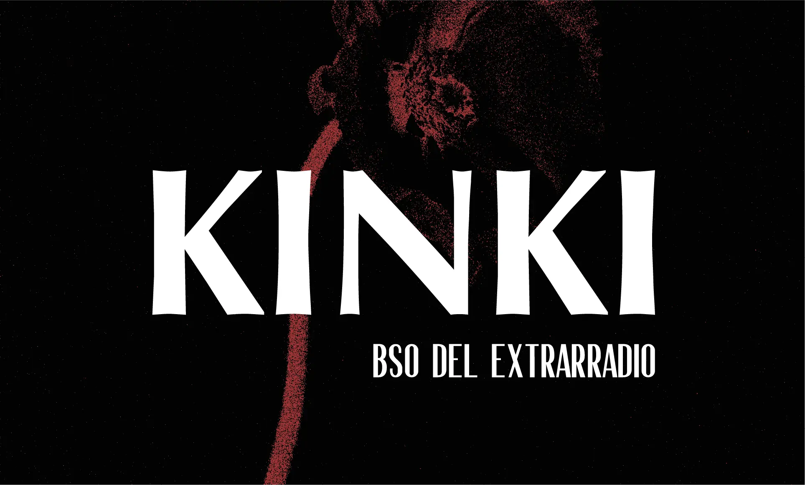
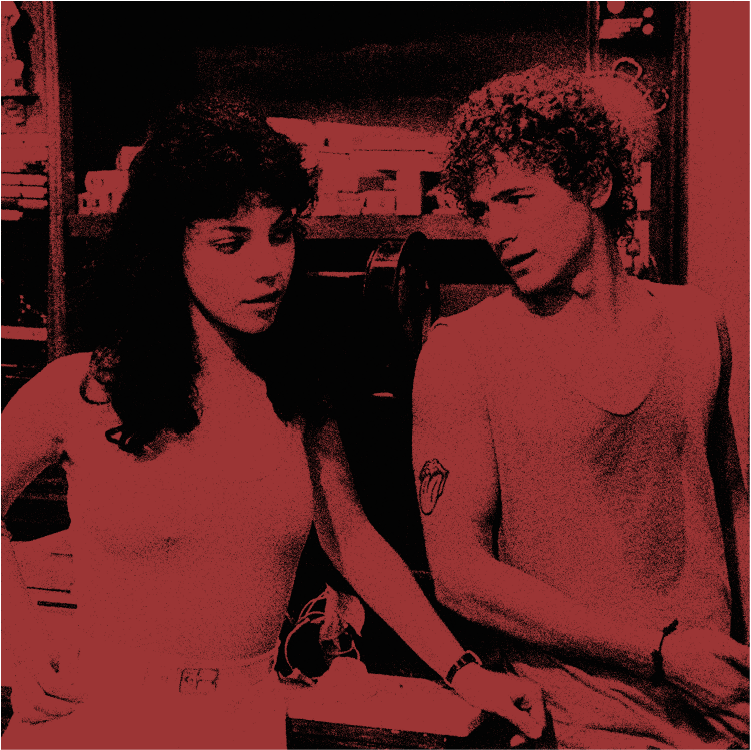
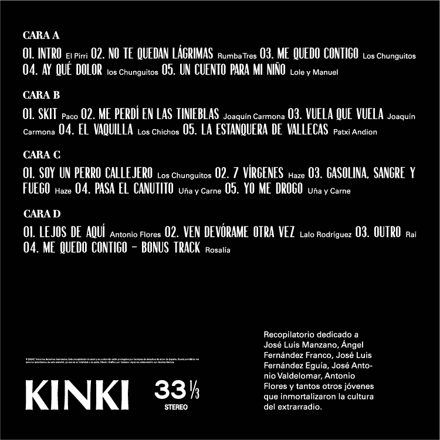
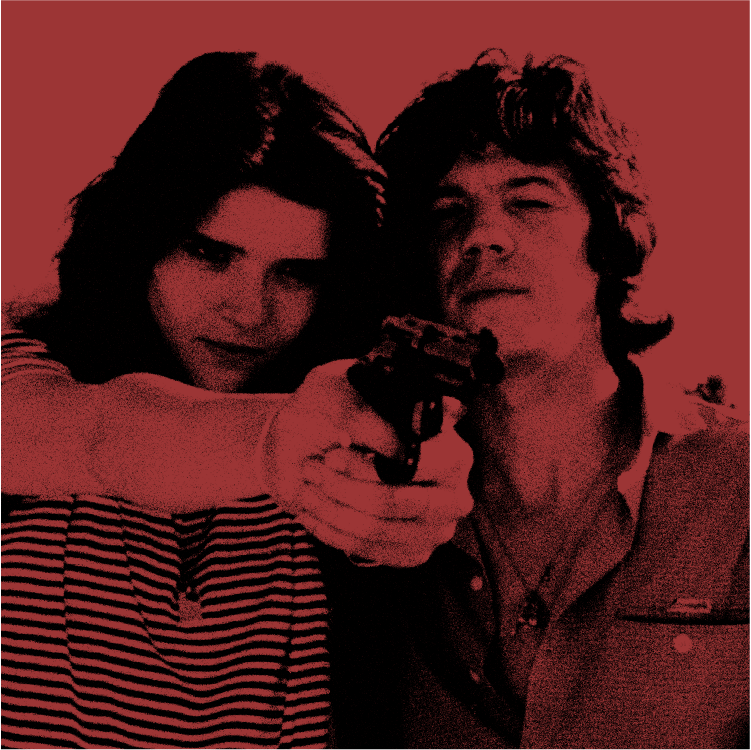
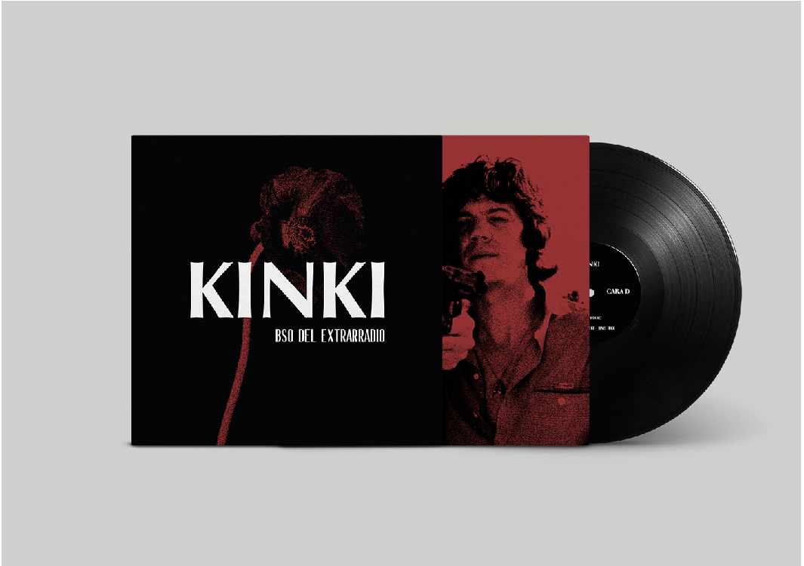
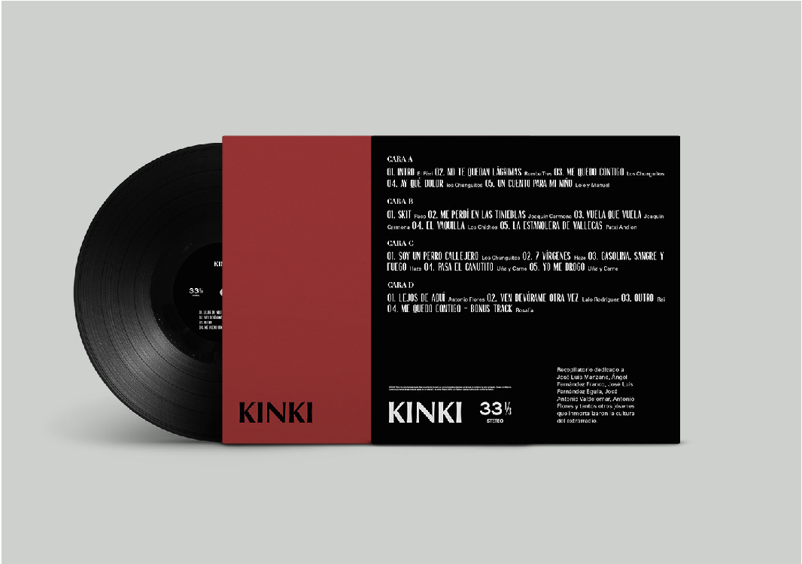

Kinki
Diseño gráfico para “Kinki”, un vinilo recopilatorio que reúne canciones de bandas sonoras pertenecientes al cine quinqui, abarcando desde los años 70 hasta los 2000. El proyecto se plantea como un homenaje a unas realidades sociales en muchos aspectos invisibilizadas, poniendo en valor una corriente cultural que retrata con crudeza y autenticidad una parte de la historia reciente.
El concepto visual se inspira en piezas de diseño que evocan la estética de la España de la posguerra, trasladando ese imaginario a un lenguaje gráfico contemporáneo. La dirección artística combina elementos tipográficos y compositivos que refuerzan el carácter narrativo del proyecto, generando una identidad coherente que dialoga con el contexto histórico y cultural del cine quinqui.





